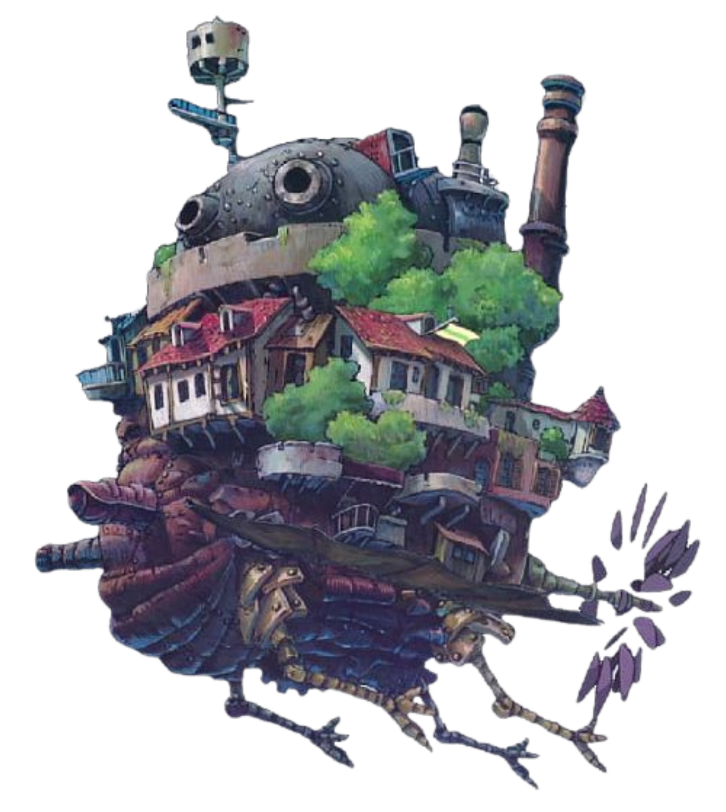
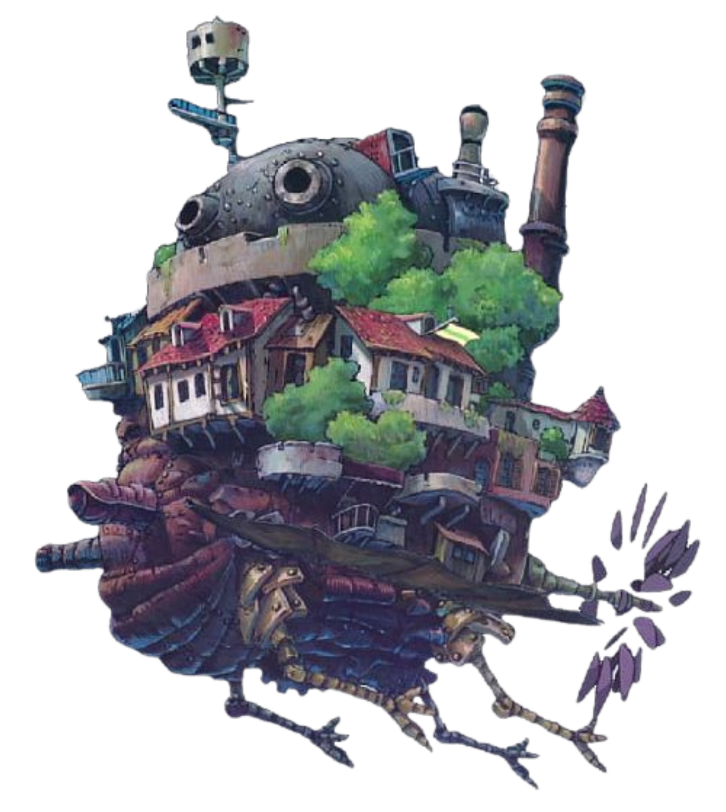

My Neighbour Totoro.
The movie tells the story of two young sisters, Satsuki and Mei Kusakabe. As the story opens, their father is driving
them to their new house, near a vast forest.
This is one of the lovingly hand-crafted works of Hayao Miyazaki, often called the greatest of the Japanese
animators, although his colleague at the Ghibli Studios, Isao Takahata, may be his equal. Remarkable that
''Totoro'' and Takahata's ''Grave of the Fireflies,'' now both in my Great Movies selection, were released
on the same double bill in 1988. Miyazaki has not until very recently used computers to help animate his
films; they are drawn a frame at a time, the classic way, with the master himself contributing tens of
thousands of the frames...
Watch Trailer

 
